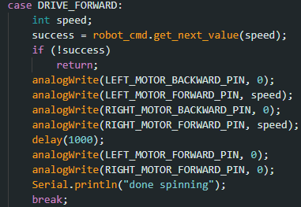
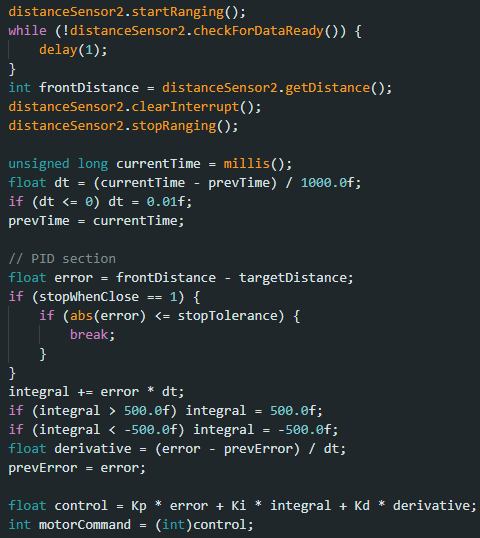
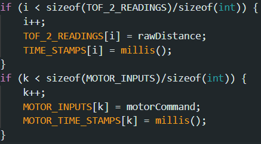
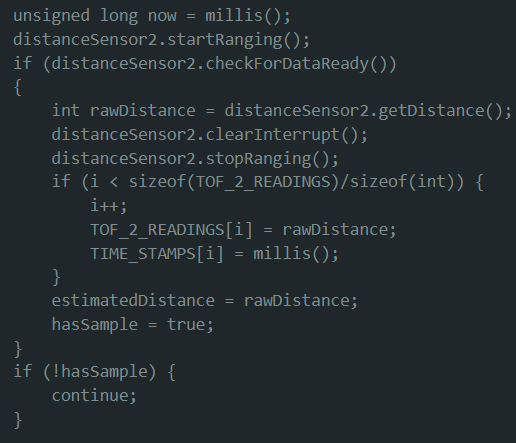
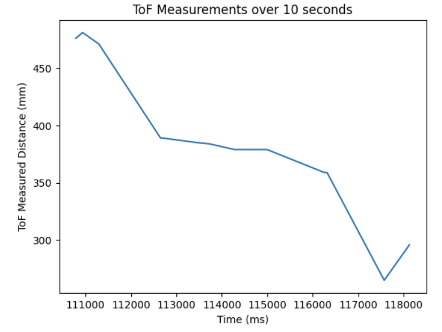
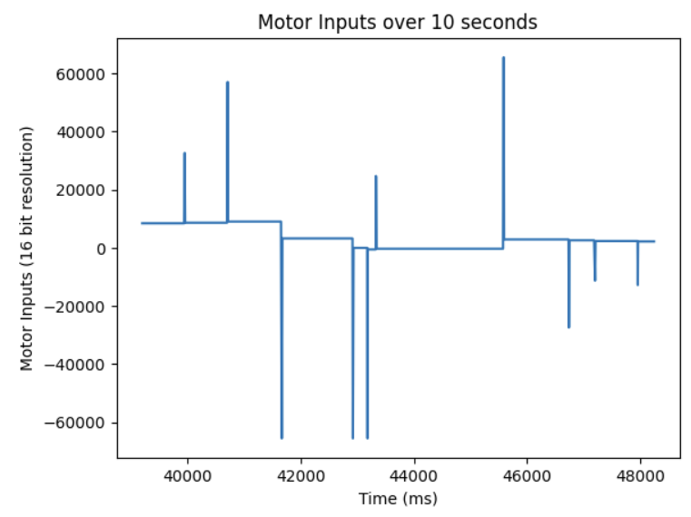
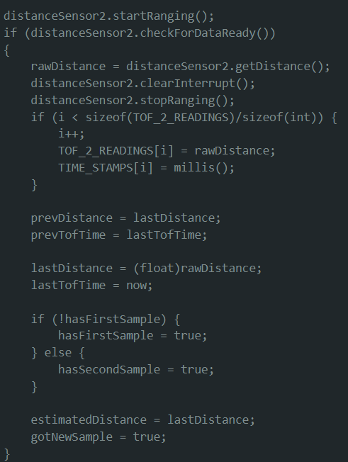
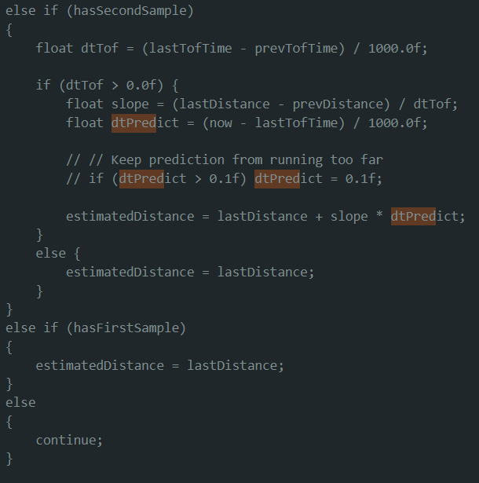
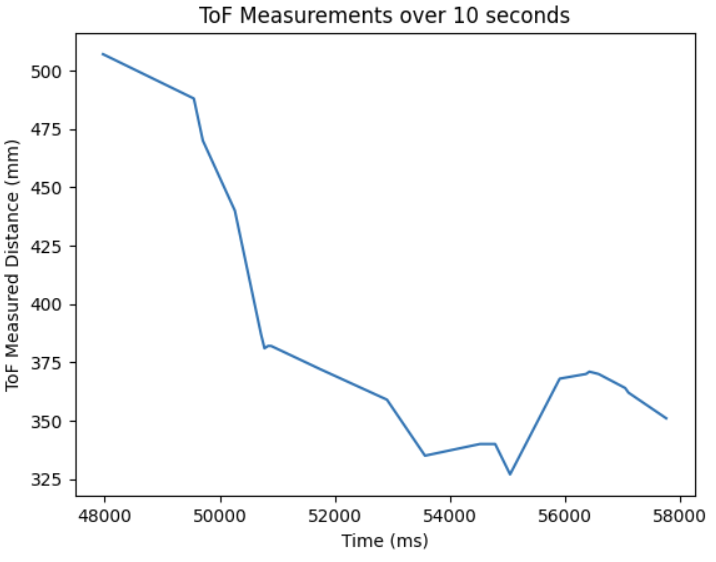
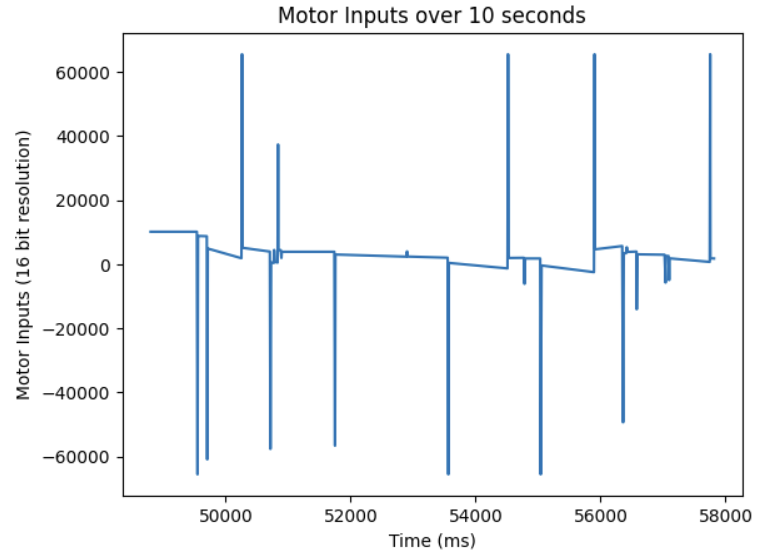

I first tested how to control the robot over bluetooth with my "DRIVE_FORWARD" command. It takes an input of the PWM signal I want the motors to spin at and spins them for 1 second.

I then started programming the PID control command. The main part of my PID control command is in the photo below where the robot first waits for new sensor data, then calculates the PID controlled command.

I then sent data back with these two if statements. Before the while loop where my PID controlled motor commands are, I initialize i and k to 0 and every time the loop completes, I update them. I used two separate index counters so that I could decouple them later on during extrapolation.

I tested my robot 2 meters away. The video below shows it in action and overshooting a bit and coming back.
Averaging the distance between readings, I got 68.14 ms between each reading when it was in the PID loop.
Instead of waiting for new data, I just used the last reading and got the data below with 50/0/30 Kp/Ki/Kd. The data was jittery and I couldn't really smooth it out with different pid constants. I think it's because it is sampling so infrequently and it thinks the distance is basically staying the same between readings.



I then used the simple linear extrapolation algorithm and got the data below with 50/0/30 Kp/Ki/Kd. I also couldn't smooth out the motor inputs and I suspect it is for the same reason why



